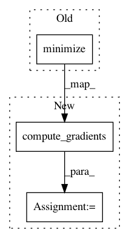

20aa03a2285ab4a18a6c63d6d42ca472ff699567,seq2seq/tf/train.py,Trainer,__init__,#Trainer#Any#Any#Any#,7
Before Change
else:
self.optimizer = tf.train.GradientDescentOptimizer(eta)
self.train_op = self.optimizer.minimize(self.loss, global_step=self.global_step)
self.loss_summary = tf.scalar_summary("loss", self.loss)
self.summary_op = tf.merge_all_summaries()
After Change
else:
self.optimizer = tf.train.GradientDescentOptimizer(eta)
gvs = self.optimizer.compute_gradients(self.loss)
capped_gvs = [(tf.clip_by_value(grad, -1., 1.), var) for grad, var in gvs]
self.train_op = self.optimizer.apply_gradients(capped_gvs, global_step=self.global_step)
self.loss_summary = tf.summary.scalar("loss", self.loss)
self.summary_op = tf.summary.merge_all()
In pattern: SUPERPATTERN
Frequency: 3
Non-data size: 3
Instances
Project Name: dpressel/mead-baseline
Commit Name: 20aa03a2285ab4a18a6c63d6d42ca472ff699567
Time: 2017-01-23
Author: dpressel@gmail.com
File Name: seq2seq/tf/train.py
Class Name: Trainer
Method Name: __init__
Project Name: p2irc/deepplantphenomics
Commit Name: c4225216a131206747cdf5ca05cb1d4ef6fa3ac9
Time: 2018-05-22
Author: nicoreekohiggs@gmail.com
File Name: deepplantphenomics/deepplantpheno.py
Class Name: DPPModel
Method Name: __assemble_graph
Project Name: reinforceio/tensorforce
Commit Name: 685e66f740e235685fd562009e70e8d8d67fa7e6
Time: 2017-01-17
Author: aok25@cl.cam.ac.uk
File Name: tensorforce/updater/deep_q_network.py
Class Name: DeepQNetwork
Method Name: create_training_operations